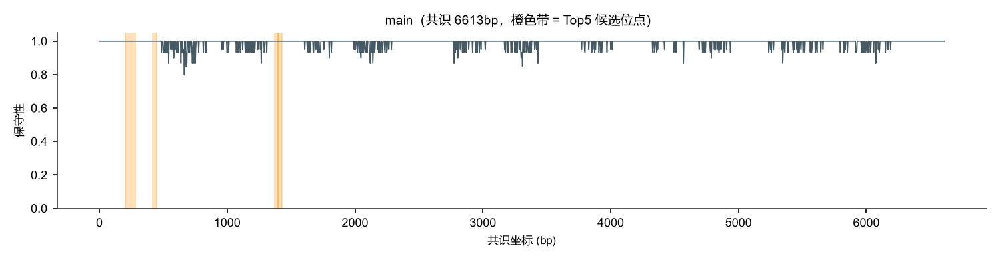
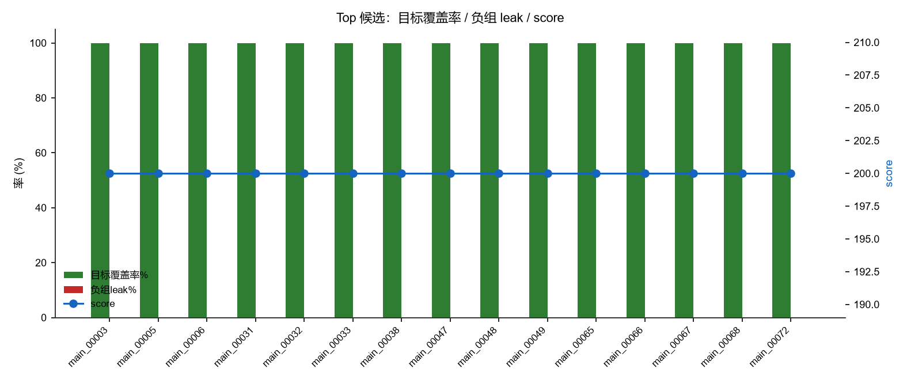

图表 4 张 · 同名 PNG/SVG 可切换 · 点击放大
子目录 conan


表格 2 张 · 前 30 行内嵌预览
candidates.tsv4.4 KBconan/candidates.tsv
| segment | rank | candidate_id | strand | PAM | cons_start | cons_end | locus_sequence_5to3 | protospacer_5to3_after_PAM | guide_spacer_5to3_RC | seed | spacer_GC_percent | seed_max_homo_run | cons_mean | filter_pass | filter_reason | target_coverage_rate | target_PAM_conservation_rate | target_seed_match_rate | negative_PAM_residual_rate | negative_seed_match_rate | negative_leak_rate | target_pass_count | target_total_count | … |
|---|---|---|---|---|---|---|---|---|---|---|---|---|---|---|---|---|---|---|---|---|---|---|---|---|
| main | 1 | CNmain_00003 | + | AAG | 202 | 236 | AAGGTTAACTTTTCCAAGGTCATTTCTCAGGAACA | GTTAACTTTTCCAAGGTCATTTCTCAGGAACA | TGTTCCTGAGAAATGACCTTGGAAAAGTTAAC | GTTAACTT | 37.5 | 2 | 1.0 | 是 | 100.0 | 100.0 | 100.0 | 5 | 5 | … | ||||
| main | 2 | CNmain_00005 | + | AAG | 245 | 279 | AAGCTACTAATGCGTACCCTGAGTTTGAAATCACC | CTACTAATGCGTACCCTGAGTTTGAAATCACC | GGTGATTTCAAACTCAGGGTACGCATTAGTAG | CTACTAAT | 43.75 | 2 | 1.0 | 是 | 100.0 | 100.0 | 100.0 | 5 | 5 | … | ||||
| main | 3 | CNmain_00006 | + | AAG | 416 | 450 | AAGGACGAGATTACGTCCATTGCTGTATGCCTAAT | GACGAGATTACGTCCATTGCTGTATGCCTAAT | ATTAGGCATACAGCAATGGACGTAATCTCGTC | GACGAGAT | 43.75 | 1 | 1.0 | 是 | 100.0 | 100.0 | 100.0 | 5 | 5 | … | ||||
| main | 4 | CNmain_00031 | + | AAG | 1371 | 1405 | AAGATCTGAGTGGGATGTAGACAAGTCTGTGTTAC | ATCTGAGTGGGATGTAGACAAGTCTGTGTTAC | GTAACACAGACTTGTCTACATCCCACTCAGAT | ATCTGAGT | 43.75 | 1 | 1.0 | 是 | 100.0 | 100.0 | 100.0 | 5 | 5 | … | ||||
| main | 5 | CNmain_00032 | + | AAG | 1393 | 1427 | AAGTCTGTGTTACAGGCGTTATCTATGACTTTTCT | TCTGTGTTACAGGCGTTATCTATGACTTTTCT | AGAAAAGTCATAGATAACGCCTGTAACACAGA | TCTGTGTT | 37.5 | 2 | 1.0 | 是 | 100.0 | 100.0 | 100.0 | 5 | 5 | … | ||||
| main | 6 | CNmain_00033 | + | AAG | 1438 | 1472 | AAGTTGGCTGAAGCAAAAGATCAAGTCGTACTTAA | TTGGCTGAAGCAAAAGATCAAGTCGTACTTAA | TTAAGTACGACTTGATCTTTTGCTTCAGCCAA | TTGGCTGA | 37.5 | 2 | 1.0 | 是 | 100.0 | 100.0 | 100.0 | 5 | 5 | … | ||||
| main | 7 | CNmain_00038 | + | AAG | 1563 | 1597 | AAGGCTCATTAGCGGTGGGTTTGTAAAAGTTGCTG | GCTCATTAGCGGTGGGTTTGTAAAAGTTGCTG | CAGCAACTTTTACAAACCCACCGCTAATGAGC | GCTCATTA | 46.88 | 2 | 1.0 | 是 | 100.0 | 100.0 | 100.0 | 5 | 5 | … | ||||
| main | 8 | CNmain_00047 | + | AAG | 1838 | 1872 | AAGTGATCGTCGCCATCATGAAGAACGAACTCACA | TGATCGTCGCCATCATGAAGAACGAACTCACA | TGTGAGTTCGTTCTTCATGATGGCGACGATCA | TGATCGTC | 46.88 | 1 | 1.0 | 是 | 100.0 | 100.0 | 100.0 | 5 | 5 | … | ||||
| main | 9 | CNmain_00048 | + | AAG | 1858 | 1892 | AAGAACGAACTCACACTGCCTTTTAAAAATCCAAC | AACGAACTCACACTGCCTTTTAAAAATCCAAC | GTTGGATTTTTAAAAGGCAGTGTGAGTTCGTT | AACGAACT | 37.5 | 2 | 1.0 | 是 | 100.0 | 100.0 | 100.0 | 5 | 5 | … | ||||
| main | 10 | CNmain_00049 | + | AAG | 1898 | 1932 | AAGCATTATCGGATGCTCTTTCACCGTTACCCAAA | CATTATCGGATGCTCTTTCACCGTTACCCAAA | TTTGGGTAACGGTGAAAGAGCATCCGATAATG | CATTATCG | 43.75 | 2 | 1.0 | 是 | 100.0 | 100.0 | 100.0 | 5 | 5 | … | ||||
| main | 11 | CNmain_00065 | + | AAG | 2363 | 2397 | AAGTCATCGTATTACTCGAATGGGCTGATGGATTC | TCATCGTATTACTCGAATGGGCTGATGGATTC | GAATCCATCAGCCCATTCGAGTAATACGATGA | TCATCGTA | 43.75 | 1 | 1.0 | 是 | 100.0 | 100.0 | 100.0 | 5 | 5 | … | ||||
| main | 12 | CNmain_00066 | + | AAG | 2481 | 2515 | AAGCTGCTTAAAGGACGGTGAGCCCGTACCTTCGG | CTGCTTAAAGGACGGTGAGCCCGTACCTTCGG | CCGAAGGTACGGGCTCACCGTCCTTTAAGCAG | CTGCTTAA | 59.38 | 2 | 1.0 | 是 | 100.0 | 100.0 | 100.0 | 5 | 5 | … | ||||
| main | 13 | CNmain_00067 | + | AAG | 2491 | 2525 | AAGGACGGTGAGCCCGTACCTTCGGATGCGAAAGT | GACGGTGAGCCCGTACCTTCGGATGCGAAAGT | ACTTTCGCATCCGAAGGTACGGGCTCACCGTC | GACGGTGA | 59.38 | 2 | 1.0 | 是 | 100.0 | 100.0 | 100.0 | 5 | 5 | … | ||||
| main | 14 | CNmain_00068 | + | AAG | 2522 | 2556 | AAGTCACGTTAGTAGATGGCGTTCCTGGTTGTGGA | TCACGTTAGTAGATGGCGTTCCTGGTTGTGGA | TCCACAACCAGGAACGCCATCTACTAACGTGA | TCACGTTA | 50.0 | 2 | 1.0 | 是 | 100.0 | 100.0 | 100.0 | 5 | 5 | … | ||||
| main | 15 | CNmain_00072 | + | AAG | 2641 | 2675 | AAGAGAGCTAATAAGTCTGGACATGTAAGAGCGAC | AGAGCTAATAAGTCTGGACATGTAAGAGCGAC | GTCGCTCTTACATGTCCAGACTTATTAGCTCT | AGAGCTAA | 43.75 | 2 | 1.0 | 是 | 100.0 | 100.0 | 100.0 | 5 | 5 | … | ||||
| main | 16 | CNmain_00073 | + | AAG | 2653 | 2687 | AAGTCTGGACATGTAAGAGCGACAAAGGATAATGT | TCTGGACATGTAAGAGCGACAAAGGATAATGT | ACATTATCCTTTGTCGCTCTTACATGTCCAGA | TCTGGACA | 40.62 | 2 | 1.0 | 是 | 100.0 | 100.0 | 100.0 | 5 | 5 | … | ||||
| main | 17 | CNmain_00074 | + | AAG | 2667 | 2701 | AAGAGCGACAAAGGATAATGTAAGAACTGTGGATT | AGCGACAAAGGATAATGTAAGAACTGTGGATT | AATCCACAGTTCTTACATTATCCTTTGTCGCT | AGCGACAA | 37.5 | 2 | 1.0 | 是 | 100.0 | 100.0 | 100.0 | 5 | 5 | … | ||||
| main | 18 | CNmain_00076 | + | AAG | 2688 | 2722 | AAGAACTGTGGATTCGTTCTTAATGCATTTGAAGC | AACTGTGGATTCGTTCTTAATGCATTTGAAGC | GCTTCAAATGCATTAAGAACGAATCCACAGTT | AACTGTGG | 37.5 | 2 | 1.0 | 是 | 100.0 | 100.0 | 100.0 | 5 | 5 | … | ||||
| main | 19 | CNmain_00082 | + | AAG | 3026 | 3060 | AAGTGGTTAGAGGGAAAGGGGTTTTTAACCCGAAA | TGGTTAGAGGGAAAGGGGTTTTTAACCCGAAA | TTTCGGGTTAAAAACCCCTTTCCCTCTAACCA | TGGTTAGA | 43.75 | 2 | 1.0 | 是 | 100.0 | 100.0 | 100.0 | 5 | 5 | … | ||||
| main | 20 | CNmain_00087 | + | AAG | 3107 | 3141 | AAGCCGAACTGAAGGAGCGTGGTTATGAAGAAGTT | CCGAACTGAAGGAGCGTGGTTATGAAGAAGTT | AACTTCTTCATAACCACGCTCCTTCAGTTCGG | CCGAACTG | 46.88 | 2 | 1.0 | 是 | 100.0 | 100.0 | 100.0 | 5 | 5 | … |
target_checks.tsv105.7 KBconan/target_checks.tsv
| segment | candidate_id | rank | target_record | observed_PAM | PAM_match | observed_seed | seed_match | effective_seed_mm | effective_spacer_mm | effective_nonseed_mm_count | target_pass | observed_window |
|---|---|---|---|---|---|---|---|---|---|---|---|---|
| main | CNmain_00003 | 1 | PZ530881.1|Odontoglossum_ringspot_virus | AAG | 是 | GTTAACTT | 是 | 0 | 是 | AAGGTTAACTTTTCCAAGGTCATTTCTCAGGAACA | ||
| main | CNmain_00003 | 1 | PZ530881.1|Odontoglossum_ringspot_virus_SIMisolate1 (synthetic isolate derived f | AAG | 是 | GTTAACTT | 是 | 0 | 是 | AAGGTTAACTTTTCCAAGGTCATTTCTCAGGAACA | ||
| main | CNmain_00003 | 1 | PZ530881.1|Odontoglossum_ringspot_virus_SIMisolate2 (synthetic isolate derived f | AAG | 是 | GTTAACTT | 是 | 0 | 是 | AAGGTTAACTTTTCCAAGGTCATTTCTCAGGAACA | ||
| main | CNmain_00003 | 1 | PZ530881.1|Odontoglossum_ringspot_virus_SIMisolate3 (synthetic isolate derived f | AAG | 是 | GTTAACTT | 是 | 0 | 是 | AAGGTTAACTTTTCCAAGGTCATTTCTCAGGAACA | ||
| main | CNmain_00003 | 1 | PZ530881.1|Odontoglossum_ringspot_virus_SIMisolate4 (synthetic isolate derived f | AAG | 是 | GTTAACTT | 是 | 0 | 是 | AAGGTTAACTTTTCCAAGGTCATTTCTCAGGAACA | ||
| main | CNmain_00005 | 2 | PZ530881.1|Odontoglossum_ringspot_virus | AAG | 是 | CTACTAAT | 是 | 0 | 是 | AAGCTACTAATGCGTACCCTGAGTTTGAAATCACC | ||
| main | CNmain_00005 | 2 | PZ530881.1|Odontoglossum_ringspot_virus_SIMisolate1 (synthetic isolate derived f | AAG | 是 | CTACTAAT | 是 | 0 | 是 | AAGCTACTAATGCGTACCCTGAGTTTGAAATCACC | ||
| main | CNmain_00005 | 2 | PZ530881.1|Odontoglossum_ringspot_virus_SIMisolate2 (synthetic isolate derived f | AAG | 是 | CTACTAAT | 是 | 0 | 是 | AAGCTACTAATGCGTACCCTGAGTTTGAAATCACC | ||
| main | CNmain_00005 | 2 | PZ530881.1|Odontoglossum_ringspot_virus_SIMisolate3 (synthetic isolate derived f | AAG | 是 | CTACTAAT | 是 | 0 | 是 | AAGCTACTAATGCGTACCCTGAGTTTGAAATCACC | ||
| main | CNmain_00005 | 2 | PZ530881.1|Odontoglossum_ringspot_virus_SIMisolate4 (synthetic isolate derived f | AAG | 是 | CTACTAAT | 是 | 0 | 是 | AAGCTACTAATGCGTACCCTGAGTTTGAAATCACC | ||
| main | CNmain_00006 | 3 | PZ530881.1|Odontoglossum_ringspot_virus | AAG | 是 | GACGAGAT | 是 | 0 | 是 | AAGGACGAGATTACGTCCATTGCTGTATGCCTAAT | ||
| main | CNmain_00006 | 3 | PZ530881.1|Odontoglossum_ringspot_virus_SIMisolate1 (synthetic isolate derived f | AAG | 是 | GACGAGAT | 是 | 0 | 是 | AAGGACGAGATTACGTCCATTGCTGTATGCCTAAT | ||
| main | CNmain_00006 | 3 | PZ530881.1|Odontoglossum_ringspot_virus_SIMisolate2 (synthetic isolate derived f | AAG | 是 | GACGAGAT | 是 | 0 | 是 | AAGGACGAGATTACGTCCATTGCTGTATGCCTAAT | ||
| main | CNmain_00006 | 3 | PZ530881.1|Odontoglossum_ringspot_virus_SIMisolate3 (synthetic isolate derived f | AAG | 是 | GACGAGAT | 是 | 0 | 是 | AAGGACGAGATTACGTCCATTGCTGTATGCCTAAT | ||
| main | CNmain_00006 | 3 | PZ530881.1|Odontoglossum_ringspot_virus_SIMisolate4 (synthetic isolate derived f | AAG | 是 | GACGAGAT | 是 | 0 | 是 | AAGGACGAGATTACGTCCATTGCTGTATGCCTAAT | ||
| main | CNmain_00007 | PZ530881.1|Odontoglossum_ringspot_virus | AAG | 是 | ATACTGTT | 是 | 0 | 是 | AAGATACTGTTTCTACTTATCTGGCTAGGCTCGAG | |||
| main | CNmain_00007 | PZ530881.1|Odontoglossum_ringspot_virus_SIMisolate1 (synthetic isolate derived f | AAG | 是 | ATACTGTT | 是 | 0 | 是 | AAGATACTGTTTCTACTTATCTGGCTAGGCTCGAG | |||
| main | CNmain_00007 | PZ530881.1|Odontoglossum_ringspot_virus_SIMisolate2 (synthetic isolate derived f | AAG | 是 | ATACTGTT | 是 | 0 | 是 | AAGATACTGTTTCTACTTATCTGGCTAGGCTCGAG | |||
| main | CNmain_00007 | PZ530881.1|Odontoglossum_ringspot_virus_SIMisolate3 (synthetic isolate derived f | AAG | 是 | ATACTGTT | 是 | 0 | 是 | AAGATACTGTTTCTACTTATCTGGCTAGGCTCGAG | |||
| main | CNmain_00007 | PZ530881.1|Odontoglossum_ringspot_virus_SIMisolate4 (synthetic isolate derived f | TAG | 否 | ATACTGTT | 是 | 12,13,19,23 | 4 | 否 | TAGATACTGTTTCTGATTATCCGGCGAGGCTCGAG | ||
| main | CNmain_00011 | PZ530881.1|Odontoglossum_ringspot_virus | AAG | 是 | ACTGTTCT | 是 | 0 | 是 | AAGACTGTTCTTACTCCGTTGATCTTCCGGGAAAA | |||
| main | CNmain_00011 | PZ530881.1|Odontoglossum_ringspot_virus_SIMisolate1 (synthetic isolate derived f | AAG | 是 | ACTGTTCT | 是 | 0 | 是 | AAGACTGTTCTTACTCCGTTGATCTTCCGGGAAAA | |||
| main | CNmain_00011 | PZ530881.1|Odontoglossum_ringspot_virus_SIMisolate2 (synthetic isolate derived f | AAG | 是 | ACTGTTCT | 是 | 24,30 | 2 | 是 | AAGACTGTTCTTACTCCGTTGATCTTACGGGATAA | ||
| main | CNmain_00011 | PZ530881.1|Odontoglossum_ringspot_virus_SIMisolate3 (synthetic isolate derived f | AAG | 是 | ACTGTTCT | 是 | 0 | 是 | AAGACTGTTCTTACTCCGTTGATCTTCCGGGAAAA | |||
| main | CNmain_00011 | PZ530881.1|Odontoglossum_ringspot_virus_SIMisolate4 (synthetic isolate derived f | AAC | 否 | ACAGTTCT | 否 | 3 | 3,25 | 1 | 否 | AACACAGTTCTTACTCCGTTGATCTTCTGGGAAAA | |
| main | CNmain_00016 | PZ530881.1|Odontoglossum_ringspot_virus | AAG | 是 | TTCACCAA | 是 | 0 | 是 | AAGTTCACCAAGGTAGATACTTATTTCCTTTTCCG | |||
| main | CNmain_00016 | PZ530881.1|Odontoglossum_ringspot_virus_SIMisolate1 (synthetic isolate derived f | AAG | 是 | TTCACCAA | 是 | 14,15,20,28 | 4 | 是 | AAGTTCACCAAGGTAGTAACTTGTTTCCTTCTCCG | ||
| main | CNmain_00016 | PZ530881.1|Odontoglossum_ringspot_virus_SIMisolate2 (synthetic isolate derived f | AAG | 是 | TTCACCAA | 是 | 0 | 是 | AAGTTCACCAAGGTAGATACTTATTTCCTTTTCCG | |||
| main | CNmain_00016 | PZ530881.1|Odontoglossum_ringspot_virus_SIMisolate3 (synthetic isolate derived f | AAG | 是 | TTCACCAA | 是 | 0 | 是 | AAGTTCACCAAGGTAGATACTTATTTCCTTTTCCG | |||
| main | CNmain_00016 | PZ530881.1|Odontoglossum_ringspot_virus_SIMisolate4 (synthetic isolate derived f | AAG | 是 | TTCACCAA | 是 | 0 | 是 | AAGTTCACCAAGGTAGATACTTATTTCCTTTTCCG |
仅预览前 30 行 · 完整文件请点下方链接。
数据与序列 1 个 · 折叠预览
summary.json18.6 KB · 2026-11-05 02:12conan/summary.json
JSON 数据
预览 JSON（前 120 行）
{
"engine": "VirusPlatform conan_design 1.0.0",
"ts": "2026-11-05 02:12:17",
"params": {
"pam": "AAG",
"spacer_len": 32,
"seed_len": 8,
"ignored_text": "6",
"max_nonseed_mm": 4,
"terminal_margin": 150,
"exclude_terminal": true,
"select_gc": true,
"gc_min": 35.0,
"gc_max": 65.0,
"exclude_homopolymer": true,
"homopolymer": 3,
"group_by_segment": true,
"top_n": 20,
"negative": null,
"threads": 8
},
"params_snapshot": {
"pam": "AAG",
"spacer_len": 32,
"seed_len": 8,
"ignored": [
6
],
"max_nonseed_mm": 4,
"terminal_margin": 150,
"gc": [
35.0,
65.0
],
"homopolymer": 3
},
"segments": [
{
"segment": "main",
"n_targets": 5,
"n_negatives": null,
"negative_applied": null,
"n_raw": 305,
"n_kept": 137,
"all_targets_pass": 86,
"background_clear": 0
}
],
"n_candidates": 20,
"top": [
{
"segment": "main",
"candidate_id": "CNmain_00003",
"strand": "+",
"cons_start": 202,
"cons_end": 236,
"guide": "TGTTCCTGAGAAATGACCTTGGAAAAGTTAAC",
"pam_len": 3,
"gc": 37.5,
"coverage": 100.0,
"leak": null,
"score": 200.0,
"all_targets_pass": true,
"all_negatives_locus_pass": null
},
{
"segment": "main",
"candidate_id": "CNmain_00005",
"strand": "+",
"cons_start": 245,
"cons_end": 279,
"guide": "GGTGATTTCAAACTCAGGGTACGCATTAGTAG",
"pam_len": 3,
"gc": 43.75,
"coverage": 100.0,
"leak": null,
"score": 200.0,
"all_targets_pass": true,
"all_negatives_locus_pass": null
},
{
"segment": "main",
"candidate_id": "CNmain_00006",
"strand": "+",
"cons_start": 416,
"cons_end": 450,
"guide": "ATTAGGCATACAGCAATGGACGTAATCTCGTC",
"pam_len": 3,
"gc": 43.75,
"coverage": 100.0,
"leak": null,
"score": 200.0,
"all_targets_pass": true,
"all_negatives_locus_pass": null
},
{
"segment": "main",
"candidate_id": "CNmain_00031",
"strand": "+",
"cons_start": 1371,
"cons_end": 1405,
"guide": "GTAACACAGACTTGTCTACATCCCACTCAGAT",
"pam_len": 3,
"gc": 43.75,
"coverage": 100.0,
"leak": null,
"score": 200.0,
"all_targets_pass": true,
"all_negatives_locus_pass": null
},
{
"segment": "main",
"candidate_id": "CNmain_00032",
"strand": "+",
"cons_start": 1393,
"cons_end": 1427,
"guide": "AGAAAAGTCATAGATAACGCCTGTAACACAGA",
"pam_len": 3,
"gc": 37.5,
"coverage": 100.0,
…（仅前 120 行）各类文件 4 个 · 全部可点开
.pdf （2 个）
.log （1 个）
run.log1019 B
.md （1 个）
report.md4.0 KB